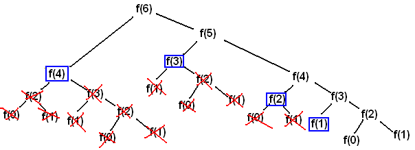

Chapitre 1 - Complexité
Dernière mise à jour : 30/09/2025
Algorithmique
Un algorithme est une séquence finie d'instructions rigoureuses permettant de résoudre un problème ou d'accomplir une tâche donnée. En d'autres termes, un algorithme est une méthode systématique qui, en partant de données en entrée, décrit étape par étape les actions à effectuer pour produire des données de sortie.
Il est important en premier lieu d'abstraire un algorithme de tout langage de programmation. En effet, bien qu'on emploie souvent des langages de programmation pour implémenter des algorithmes, ils peuvent également être décrits de divers autres façons : en langage naturel, avec du pseudocode, etc.
Comme exemple, supposons que l'on aimerait résoudre un problème : calculer la somme de deux nombres. Nous pouvons implémenter un algorithme qui va décrire les étapes à effectuer pour résoudre ce problème.
Nous pouvons tout d'abord représenter cet algorithme en langage naturel (français dans notre cas), un peu comme une recette de cuisine :
- Etape 1 : lire les valeurs de
a et b données en entrée. On suppose que a et b représentent les deux nombres.
- Etape 2 : calculer la somme de
a et de b.
- Etape 3 : affichier la somme obtenue.
- Etape 4 : fin des étapes.
Ce formalisme est très clair pour un humain, mais ce n'est pas très formel. Nous pouvons rendre cet algorithme plus formel en le représentant avec du pseudocode :
ALGORITHM: sumTwoNumbers
INPUT: a (integer) and b (integer)
OUTPUT: sum of a and b (integer)
BEGIN
READ a, b
SUM = a + b
PRINT SUM
END
L'algorithme est à présent représenté de façon beaucoup plus formelle. Cependant, ce pseudocode mélange du langage naturel et des conventions de nommage logiques/de programmation, ce qui n'est pas lisible par un ordinateur. Pour ce faire, nous pouvons aller encore plus loin et représenter l'algorithme avec le langage de programmation Java :
int sumTwoNumbers(int a, int b) {
int sum = a + b;
System.out.println("The sum is: " + sum);
return sum;
}
En conclusion, nous avons réalisé un algorithme permettant de résoudre le problème du calcul de la somme de deux nombres. Nous avons implémenté cet algorithme de trois façons différentes : en langage naturel, en pseudocode, et en langage de programmation. Bien que la façon idéale de représenter un algorithme en informatique soit d'utiliser un langage de programmation, il est souvent utile de d'abord représenter un algorithme en langage naturel ou en pseudocode afin d'avoir une idée globale de son fonctionnement.
Langage Java
Dans le cadre de ce cours, nous allons utiliser le langage de programmation Java pour implémenter des algorithmes. Il est important de noter qu'on ne vous demande pas d'être des professionnels du langage. Ce qui compte surtout, c'est de comprendre les concepts liés aux algorithmes : savoir décomposer un problème, concevoir les étapes, spécifier, organiser les instructions, etc. Une fois que ces notions sont bien assimilées, il devient beaucoup plus facile de passer d'un langage à un autre (car les idées fondamentales restent les mêmes). Maîtriser les concepts liés aux algorithmes est bien plus précieux que de mémoriser la syntaxe de Java !
Type primitif : int (entier), boolean (vrai/faux), char (caractère), float, double, etc.
Type non-primitif (objet) : String (chaine de caractères), int[] (tableau d'entiers), String[] (tableau de chaines de caracères), etc.
Opération mathématique : +, -, *, /, % (modulo), etc.
Expression logique : && (AND), || (OR), ! (négation), etc.
Commentaire :
// this is a single line comment
/*
this is
a multiline
comment
*/
Variable :
int nb = 10;
boolean exists = false;
String[] cars = {"audi", "bmw", "skoda"};
Tableau :
int[] numbers = {1, 2, 3, 4};
System.out.println(numbers[0]); // prints the first element of numbers (1)
Condition :
if(a > 0) {
System.out.println("a is positive");
}
else {
System.out.println("a is negative or 0");
}
Boucle for :
for(int i = 0; i < 10; i++) {
System.out.println(i);
}
Boucle while :
while(a > 0) {
a--;
}
Fonction :
public static int sum(int x, int y) {
return x + y;
}
Récursion :
public static int factorial(int n) {
if(n == 0 || n == 1) {
return 1; // base case
}
else {
return n * factorial(n - 1); // recursive call
}
}
L'ensemble de ces concepts en Java devraient déjà consister en une bonne base pour commencer à implémenter des algorithmes.
Types de Fonctions
Afin d'implémenter un algorithme, on va souvent devoir boucler (itérer plusieurs fois) pour résoudre le problème associé. En effet, plein de problèmes en ont besoin : trouver le minimum dans une liste, trier les éléments d'un tableau, etc. Dans les langages de programmation, on va pouvoir implémenter des fonctions qui bouclent de deux façons différentes :
- Fonction itérative : fonction impliquant une boucle (de type
for ou while) répétant des instructions jusqu'à ce qu'une certaine condition est atteinte.
- Fonction récursive : fonction s'appelant elle-même jusqu'à ce qu'une certaine condition est atteinte. Il faut souvent utiliser plus de paramèters pour transmettre de l'information mise à jour dans les prochaines récursions.
Souvent, l'itération et la récursion sont interchangeables.
Complexité
Vu que les ressources disponibles d'un ordinateur ne sont (pas encore) illimitées, il est important d'implémenter des algorithmes qui en prennent compte. Donc, lorsqu'on implémente un algorithme, on va mesurer son efficacité sur base de sa consommation en ressources.
La complexité algorithmique est une manière de mesurer l'efficacité d'un algorithme. Elle permet de savoir combien de temps de calcul ou combien de d'espace mémoire un algorithme va utiliser en fonction de la taille de son entrée (souvent représentée par n). Par exemple, si on a un algorithme qui trie une liste de n entiers, la complexité nous aide à estimer combien d'opérations seront nécessaires quand n devient très grand. La complexité aide notamment à comparer l'efficacité de différents algorithmes, et de choisir le plus adapté à un problème donné.
Selon la ressource, on peut mesurer deux types de complexités :
- Complexité en temps : indique combien d'opérations l'algorithme va effectuer.
- Complexité en espace : indique combien de mémoire l'algorithme va utiliser.
On utilisera la notation grand O pour représenter la complexité d'un algorithme en fonction des entrées n. Par exemple, O(n) représente une complexité linéaire. Afin de comprendre l'impact de la complexité d'un algorithme, on peut visualiser le schéma suivant :

On peut comprendre comment le temps ou l'espace utilisé par un algorithme augmente quand la taille de l'entrée n augmente, et donc en conséquence l'importance d'optimiser les implémentations d'algorithmes.
Lorsqu'on implémente des algorithmes, on retrouve parfois des complexités "types" qui ont leur propre nom :
O(1) : complexité constante.O(log n) : complexité logarithmique.O(n) : complexité linéaire.O(n log n) : complexité linéarithmique ou loglinéaire.O(n^2) : complexité quadratique.O(2^n) : complexité exponentielle.O(n!) : complexité factorielle.
Il est possible de calculer la complexité d'un algorithme à partir de son code. L'idée est d'analyser le nombre d'opérations effectuées en fonction de la taille de l'entrée n.
Opérations constantes : les opérations qui ne dépendent pas de n ont une complexité constante O(1), car peu importe la taille de l'entrée n, ces opérations prendront toujours le même temps à exécuter.
public static void test(int n) {
int a = 2; // O(1)
int b = 100000 * 2 / 10; // O(1)
int c = 10 + n; // Also O(1) because insignificant
}
Conditions : lorsqu'une condition if pourrait mener vers une complexité très élevée, on la considère car on prend toujours le "pire cas possible" pour le calcul de la complexité.
public static void test(int n, int a) {
if(a > 10) { // O(n^2) ; We consider this as it is the worst case possible
// Execute n^2 operations
}
else { // O(1)
// Execute 1 operation
}
}
Boucles : lorsqu'une boucle itère en fonction de la taille d'entrée n, sa complexité correspond également au nombre d'itérations n. Il faut faire attention car certaines boucles peuvent itérer plus rapidement et donc ont une complexité inférieure à n. Lorsque des boucles sont imbriquées, on multiplie leurs complexités.
public static void test(int n) {
// O(n)
for(int i = 0; i < n; i++) { // we iterate n times
// code
}
// O(n) * O(n) = O(n^2)
for(int i = 0; i < n; i++) { // we iterate n times
for(int j = 0; j < n; i++) { // we iterate n times
// code
}
}
// O(log n)
for(int i = 1; i < n; i *= 2) { // we iterate log n times
// code
}
}
Récursions : pour calculer la complexité d'un programme contenant de la récursion, on utilise des équations récurrentes.

Pour trouver la forme de l'équation, on regarde la forme de la récursion cT(...) et la forme du reste du code bn^k. En fonction de l'équation récurrente formée, on peut trouver la complexité finale à l'aide du tableau.
Simplifications : il existe des règles à appliquer pour trouver la forme générale d'une complexité.

Formules log : il existe également des formules pour transformer/simplifier des expressions logarithmiques.
Mémoisation
La mémoisation est une technique d'optimisation pour les algorithmes récursifs (qui recalculent souvent les mêmes résultats). L'idée est simple : stocker les résultats déjà calculés dans une structure (tableau, liste, dictionnaire, etc.) pour ne pas devoir les recalculer. Cela permet souvent de réduire la complexité des algorithmes récursifs qui explorent plusieurs fois les mêmes sous-problèmes.
Par exemple, nous pouvons appliquer le principe de mémoisation à une fonction récursive qui calcule la suite de Fibonacci :
public static int fibonacciMemo(int n, int[] memo) {
if(n <= 1) {
return n; // base case
}
if(memo[n] != -1) {
return memo[n]; // case when the result is already in the memo
}
memo[n] = fibonacciMemo(n - 1, memo) + fibonacciMemo(n - 2, memo);
return memo[n];
}
On peut voir une illustration du principe de mémoisation pour Fibonacci ci-dessous :

Exercices
1. Algorithmes
Implémentez des algorithmes en langage naturel, pseudocode, et en Java pour résoudre les problèmes suivants :
1.1. Trouver le maximum entre deux entiers.
public static int max(int a, int b) {
if(a > b) {
return a;
}
else {
return b;
}
}
1.2. Afficher tous les entiers inférieurs à un entier donné.
public static void printNumbersBelow(int x) {
if(x <= 0) {
System.out.println("No numbers to display");
return;
}
for(int i = 0; i < x; i++) {
System.out.println(i);
}
}
1.3. Déterminer si un entier est pair ou impair.
public static boolean isEven(int x) {
return n % 2 == 0;
}
2. Itération et Récursion
Implémentez des algorithmes en Java dans des fonctions itératives et récursives pour résoudre les problèmes suivants :
2.1. Renvoyer la valeur minimale d'un tableau d'entiers.
Fonction itérative :
public static int tabMinIterative(int[] tab) {
int minValue = tab[0];
for(int index = 1; index < tab.length; index++) {
if(tab[index] < minValue) {
minValue = tab[index];
}
}
return minValue;
}
Fonction récursive :
public static int tabMinRecursive(int[] tab, int index) {
if(index == 0) {
return tab[0];
}
int minValue = tabMinRecursive(tab, index - 1);
if(minValue < tab[index]) {
return minValue;
}
else {
return tab[index];
}
}
2.2. Étant donné un nombre n, calculer la somme de 1 à n.
Fonction itérative :
public static int sumIterative(int n) {
int sum = 0;
for(int i = 1; i <= n; i++) {
sum += i;
}
return sum;
}
Fonction récursive :
public static int sumRecursive(int n) {
if (n <= 0) {
return 0;
}
return n + sumRecursive(n - 1);
}
2.3. Inverser une chaîne de caractères.
Solution
3. Complexité
3.1. Simplifiez l'ordre de grandeur suivant : log(n^2) + (log(2^n))^2 + log(4^n) + n * log(n)
2logn + (nlog2)^2 + nlog4 + n * logn
2logn + (n * 1)^2 + (n * 0.6) + n * logn
2logn + n^2 + 0.6n + nlogn
logn + n^2 + n + nlogn
O(n^2), car n^2 est la complexité la plus élevée.
3.2. Donnez la complexité en temps de la fonction suivante :
public static int myFunc(int n) {
int u = 0;
for(int i = 0; i <= n * n; i++) {
u = i;
while(u > 1) {
u = u / 2;
}
}
return u;
}
public static int funcA(int n) {
int u = 0; // 1
for(int i = 0; i <= n * n; i++) { // n^2
u = i; // 1
while(u > 1) { // log n
u = u / 2; // 1
}
}
return u; // 1
}
On omet les complexités constantes de type O(1), et on multiplie les complexités des boucles imbriquées : O(n^2) * O(log n). On obtient donc la complexité en temps O(n^2 log n) (loglinéaire quadratique).
3.3. Donnez la complexité en temps de la fonction suivante :
public static int funcB(int n) {
int r = 0;
if(n > 4) {
for(int i = 0; i < 4; i++) {
r = r + funcB(n/2);
}
}
for(int i = 1; i < n; i *= 2) {
for(int j = 0; j < n; j++) {
for(int k = j; k < n; k += 2) {
r += i + j * k;
}
}
}
return r;
}
public static int funcB(int n) {
int r = 0; // 1
if(n > 4) { // Worst case, enter if
for(int i = 0; i < 4; i++) { // 4
r = r + funcB(n/2); // T(n/2)
}
}
for(int i = 1; i < n; i *= 2) { // log n
for(int j = 0; j < n; j++) { // n
for(int k = j; k < n; k += 2) { // n/2
r += i + j * k; // 1
}
}
}
return r; // 1
}
Forme de la récursion cT(n/d) : 4T(n/2).
Forme du reste du code bn^k : log n * n * n/2 = n^2 log n (n/2 se transforme en n car on omet la constante 2).
On obtient l'équation récurrente : 4T(n/2) + n^2 log n, ce qui correspond à la condition c = d^k <=> 4 = 2^2.
Ce qui correspond à la complexité O(n^2 log n).
4. Mémoisation
4.1. Mémoisez le programme suivant :
© 2025 Alix Decrop. Le contenu de cette page est mis à disposition selon les termes de la license Creative Commons Attribution - CC BY-NC-ND 4.0. En gros, vous êtes libres de copier/redistribuer le contenu de cette page, sans utilisation commerciale ni modifications.